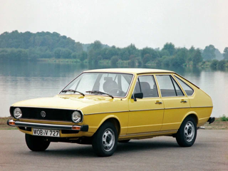
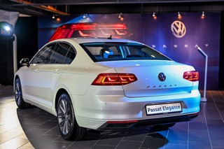
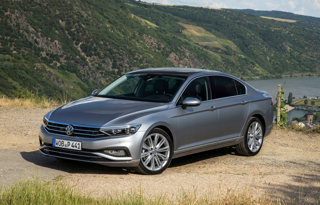
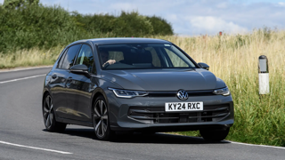
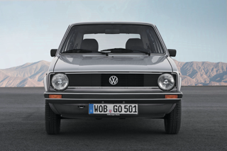
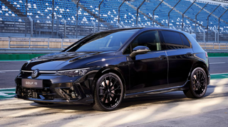

Volkswagen Passat on Volkswageni suur keskklassi sõiduauto, mida on toodetud erinevate keretüüpidega.Praegu on saadaval sedaan ja universaal (Variant), aga Passatist on olnud saadaval ka kupee (CC) ja 2-ukselised sedaanid ja luukpärad. Passatit on toodetud kaheksa põlvkonda.Eestis on Volkswagen Passati omanikke tuhande elaniku kohta enim Põlva ning Võru maakonnas.
Esimese põlvkonna Passat avalikustati 1973. aastal ning tehniliselt oli tegu Audi 80 sedaaniga. Keretüübid olid kahe- ja neljaukselised laugpära-sedaanid ning nende kolme- ja viieukselised versioonid.
| Parameeter | Andmed |
|---|---|
| Mootori võimsus | 150 - 280 hj |
| Kütus | Bensiin / Diisel |
| Hübriid versioon | On olemas |
Passat'ite koguarvu on tõenäoliselt keeruline kokku lugeda, kuna erinevate põlvkondade autosid - alates B1-st kuni B8-ni - toodetakse jätkuvalt erinevates riikides erinevate nimede all. On teada, et B3-põlvkonna autosid ehitati umbes 1,6 miljonit. Seevastu Passat B5 toodeti umbes 3,3 miljoni auto ulatuses.
Passat B3 universaalkerega omanikel õnnestus 70-liitrisesse paaki tankida kuni 105 liitrit kütust. See võimaldas üle piiri vedada rohkem kütust edasimüümise eesmärgil (näiteks Poolas).
Mudeli populaarsus võimaldas põlvkonnavahetusega säilitada järjepidevust. Sisuliselt oli Passat B2 B1 mudeli uuendatud versioon, samas kui B4 oli B3 täiustatud variant. Hiljem, ostjate pärast konkureerides, pidi Volkswagen mudeleid juba täiesti uuesti arendama. See kehtib iga põlvkonna kohta alates B5-st kuni B8-ni.



Volkswagen Golf on Volkswagen AG kaubamärgi Volkswagen poolt toodetav sõiduauto. Golf on üle 24 miljoni koostatud autoga Volkswageni ajaloo müüduim mudel.
Golfe toodetakse järgmiste keretüüpidega: kolmeukseline luukpära, viieukseline luukpära, universaal (Estate/Variant) ja kabriolett (Cabrio). Samuti on tootmises Golfi põhjal loodud sedaankerega mudel (Volkswagen Jetta). Golfe ehitati esimesest kuni 6. põlvkonnani Volkswageni grupi ühisele A-platvormile ning alates 7. põlvkonnast on kasutusel uus VW Grupi MQB platvorm.
| Parameeter | Andmed |
|---|---|
| Mootori võimsus | 110 - 320 hj |
| Kütus | Bensiin / Diisel |
| Hübriid versioon | On olemas |
Esimese 30 tootmiskuu jooksul valmis 1 miljon Golfi, mis muutis Volkswageni üheks suurimaks autotootjaks Euroopas.
Kolmanda põlvkonna Golfil oli versioon nimega Harlekin (Arlekiin). Neid autosid valmistati tehases, vahetades keredetaile (stanged, tiivad, kapott ja uksed) omavahel nelja erinevat värvi autode vahel (punane, kollane, sinine ja roheline). Selle tulemusel saadi kirju värvusega Golf, mis meenutas oma välimusega klouni. Kokku toodeti 264 autot.
Tänapäeval on Volkswagen Golfi tootmises hõivatud üle 50 000 inimese 8 erinevas riigis. Mudelit eksporditakse 130 riiki.


